A · Coastline
Brand-led and open. A full-width coastal image leads into a clear comparison of the homes.
Open native direction →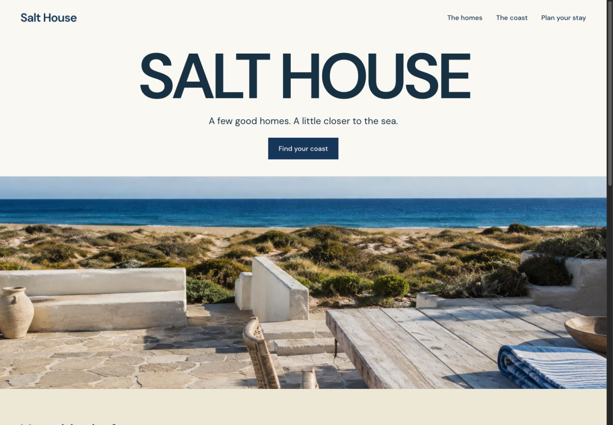
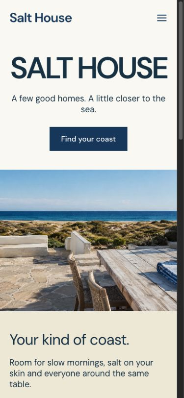
View body section at desktop and mobile
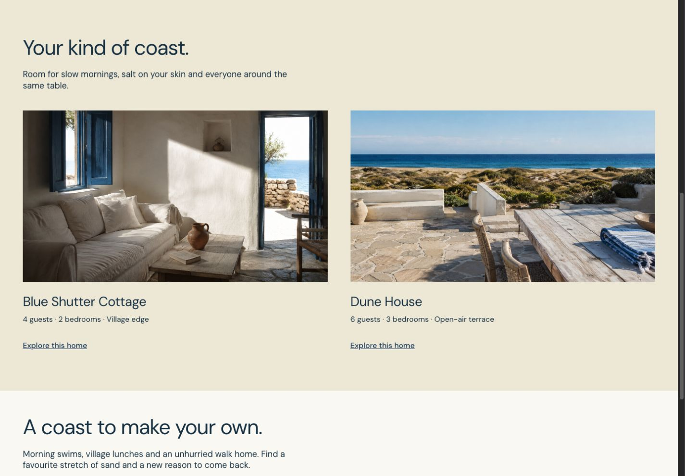
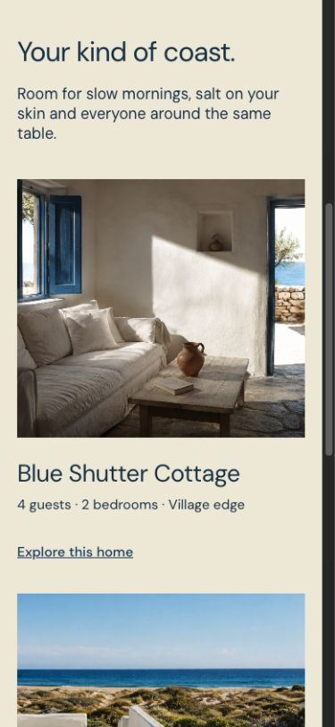
Three native Pagecraft directions for a small vacation-rental collection. I recommend A for its stronger brand presence and open coastal composition.
These are direction studies, not a finished booking site. Open each direction to review the full hero and body.
Brand-led and open. A full-width coastal image leads into a clear comparison of the homes.
Open native direction →



Warm and editorial. A tall image and a sequential story introduce one home at a time.
Open native direction →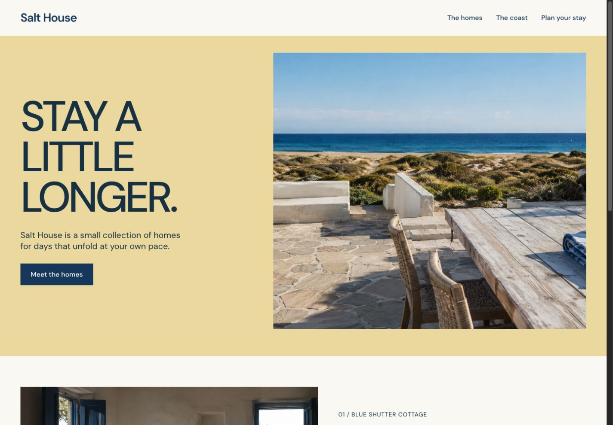
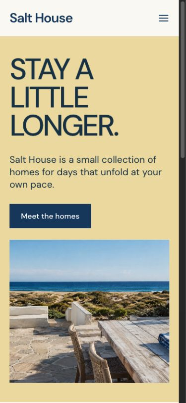
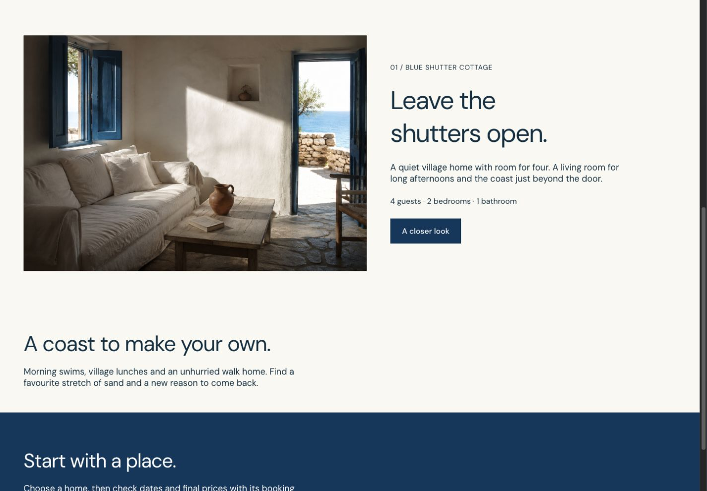
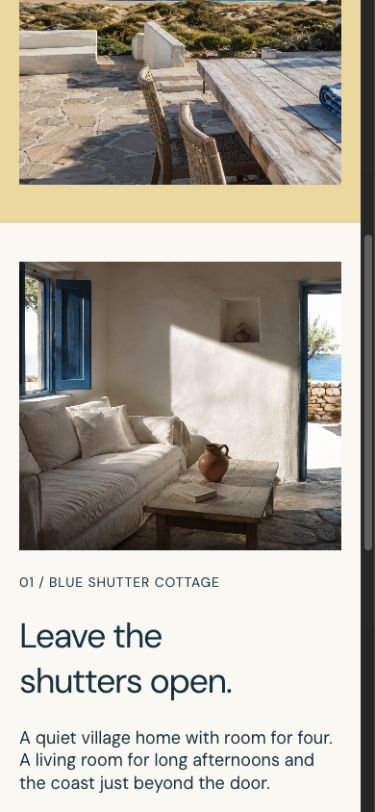
Property-first. Guests see the homes and their practical facts immediately.
Open native direction →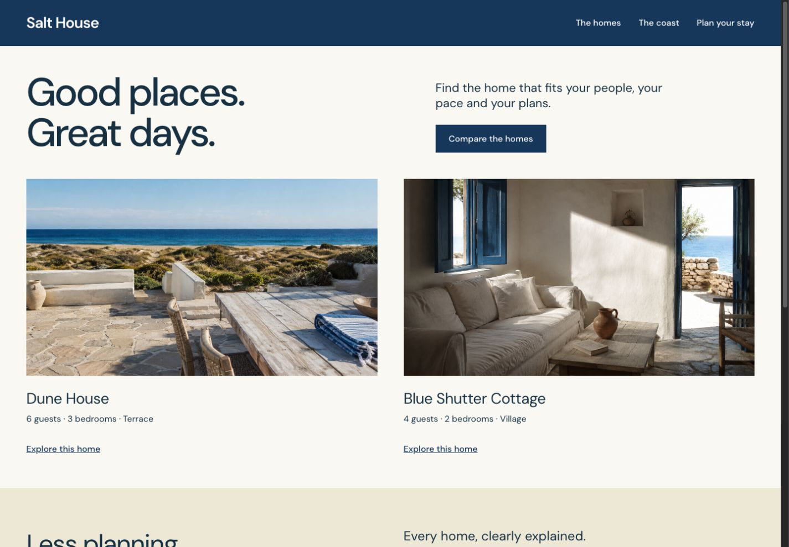
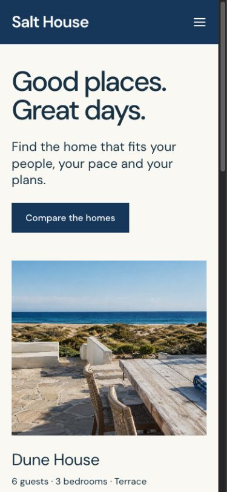
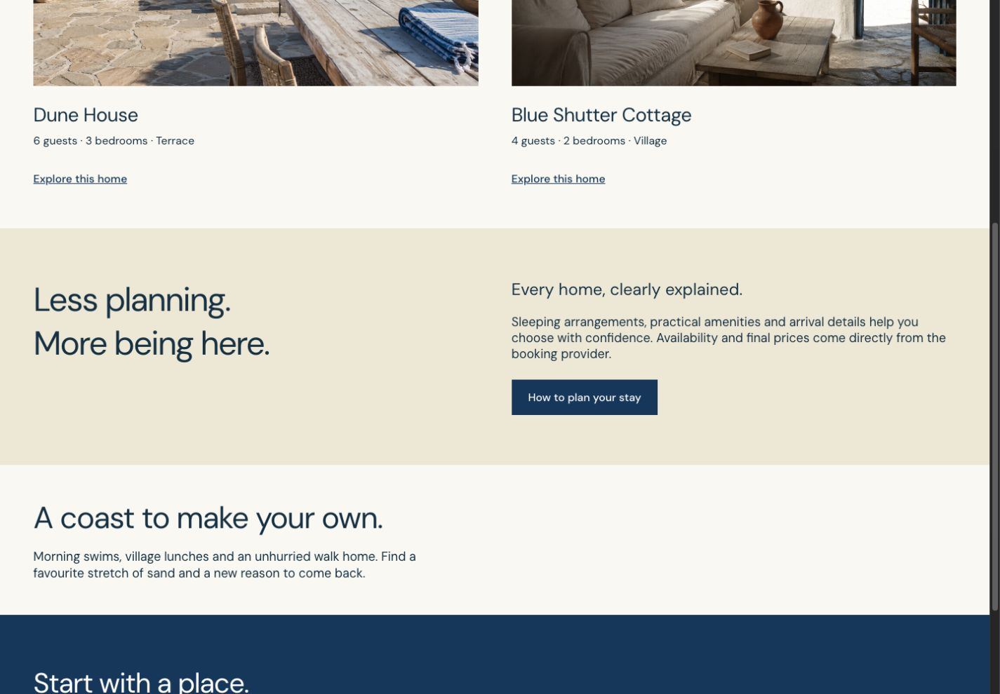
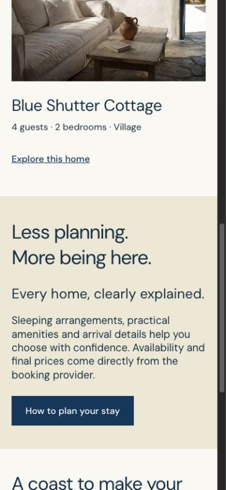